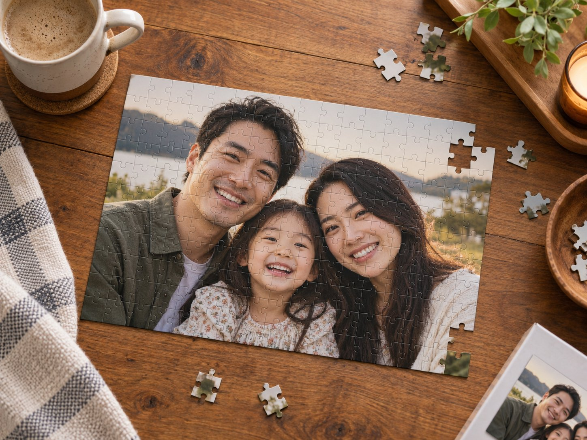

A creative tool shared from a small-town workshop in China
Turn any photo into a keychain design.
Remove the background, preview the real acrylic shape, and download your files. No signup, no watermark, no purchase required.

IDEA
Free creative tools for everyday makers
Choose a tool and start creating
Photo gifts, stickers, printables and personal details, all made in your browser.
 Photo GiftsTurn photos into meaningful keepsakes.↗
Photo GiftsTurn photos into meaningful keepsakes.↗
 Stickers & CuttingMake stickers, cut lines and toppers.↗
Stickers & CuttingMake stickers, cut lines and toppers.↗
 Events & PrintablesTags, cards and party details.↗
Events & PrintablesTags, cards and party details.↗
 Names & AccessoriesLittle things with your name on them.↗
Names & AccessoriesLittle things with your name on them.↗
 Kids & LearningWorksheets and creative play.↗
Kids & LearningWorksheets and creative play.↗
Made for personal moments
Your idea, your file, your choice.
Design for free and download the result. If you want a physical piece, ask the workshop to make it after you approve the proof.
See what you can make →
Free DIY Keychain Maker
Create freely. Make it real if you wish.
The dotted dimensions describe the acrylic body, not the metal hardware.
WORKSHOP
From a small town to your pocket
Technology starts it. People finish it.
This project connects a free digital tool with a small maker workshop in a county town in China. The workshop prints, cuts, assembles, checks, and packs each physical piece.
- Download your free design.
- Request physical production only if you want it.
- We confirm the shape, exact size, price, and destination.
- The workshop makes and ships the approved piece.
Straight answers
Custom keychain questions
Is the custom keychain maker really free?
Yes. Uploading a photo, shaping the acrylic outline, and downloading your transparent PNG or mockup cost nothing. There is no signup, no watermark, and no email wall. You only pay if you ask the workshop to produce a physical keychain, at $14.99 for one, $24.99 for two, or $32.99 for three.
What kind of photo works best for a keychain?
A well-lit photo where the subject fills most of the frame and stands clearly away from the background gives the cleanest result. Photos of at least 1000 pixels on the long side stay sharp at 5 cm. Pets, portraits, drawings, logos, and scanned artwork all work.
How big is the finished acrylic keychain?
You choose a finished long side of 4 cm, 5 cm, or 6 cm. The acrylic body includes the clear border and the hanging tab. The metal ring and chain are separate hardware. The live preview shows the exact acrylic silhouette before you download or order.
Do I have to remove the background myself?
No. Rectangular mode keeps your whole image and is instant. For a custom-shaped keychain you can erase the background with the manual brush inside the browser, or choose to let the workshop decide and send the original photo with your order request.
What happens after I send an order request?
Nothing is charged when you submit. The workshop inspects your files and address, then emails a proof and a final PayPal invoice. Production only starts after you approve the proof and pay. You can also simply download the artwork and never order.
From the same free engine